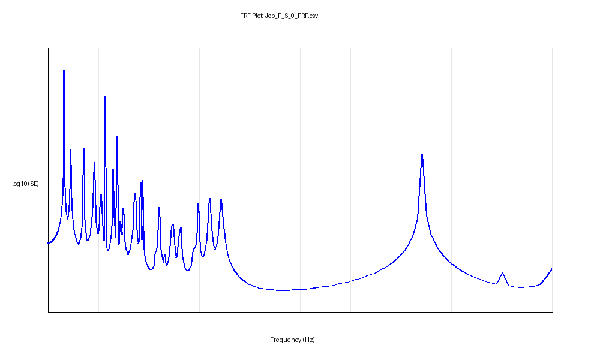
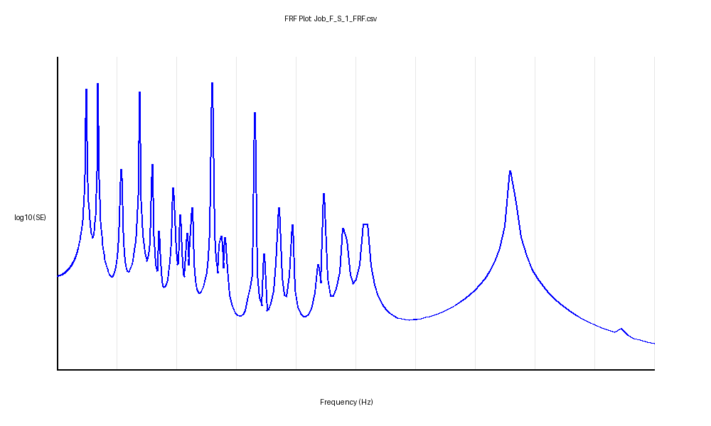
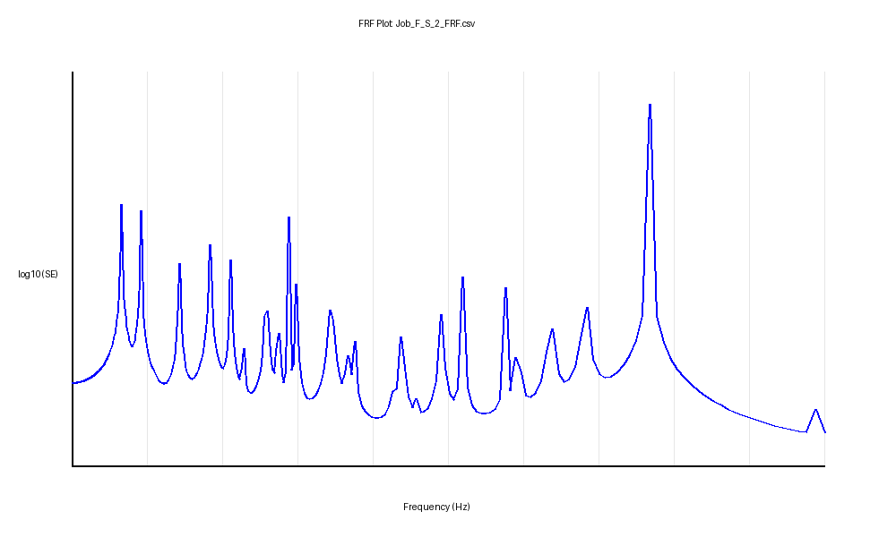
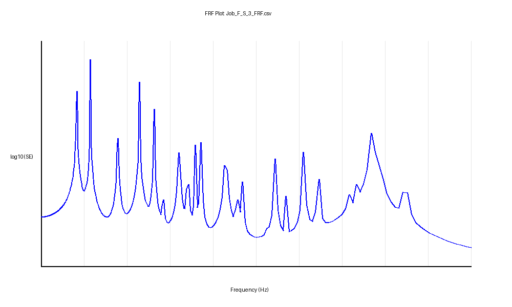
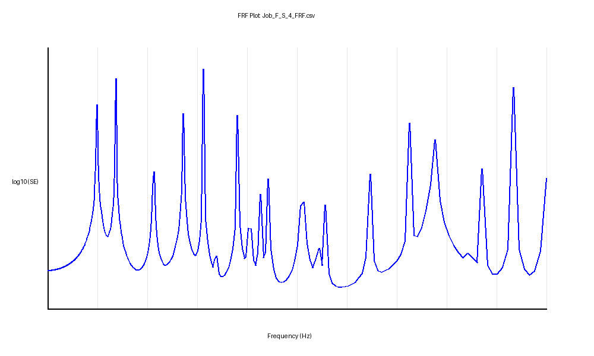
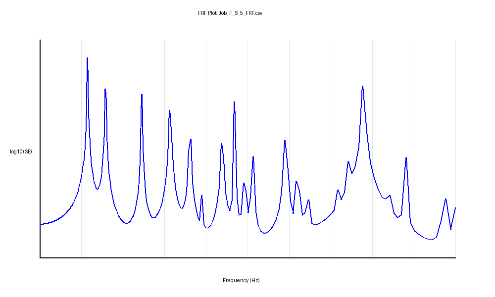
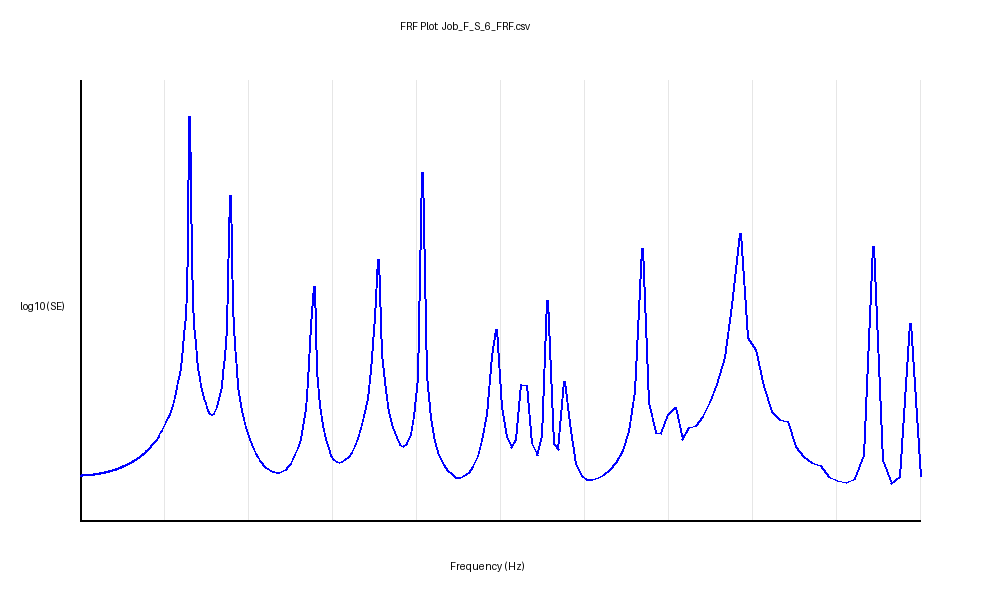

Analysis Tool: Abaqus Standard (Simulia)
Project: Buckling and Frequency Response Optimization
Date: March 3, 2026
This study evaluates the structural performance of a 2D beam assembly under high compressive loads. A parameter sweep was conducted across seven slenderness ratios ($w/L$) ranging from 0.05 to 0.20. The primary objectives were to identify the critical buckling load and characterize the dynamic energy response across a frequency spectrum of 100 Hz to 30,000 Hz.
The base model consists of a 2D planar deformable body modeled with B21 (linear beam) elements. The material properties assigned correspond to standard structural steel:
Supports were modeled using symmetry constraints ($XASYMM$). A total compressive load of 51,200 N was applied, distributed as 3,200 N concentrated forces across 16 critical nodes. This load represents the nominal pressure for buckling factor estimation.
| Ratio (w/L) | Width [mm] | Radius [mm] | Eigenvalue (λ) | Critical Load [N] |
|---|---|---|---|---|
| 0.050 | 0.250 | 0.125 | 1.8287e-03 | 93.6 |
| 0.075 | 0.375 | 0.188 | 9.2798e-03 | 475.1 |
| 0.100 | 0.500 | 0.250 | 2.8694e-02 | 1,469.1 |
| 0.125 | 0.625 | 0.313 | 6.9492e-02 | 3,558.0 |
| 0.150 | 0.750 | 0.375 | 1.4077e-01 | 7,207.4 |
| 0.175 | 0.875 | 0.438 | 2.5682e-01 | 13,149.2 |
| 0.200 | 1.000 | 0.500 | 4.2663e-01 | 21,843.5 |
The following figures illustrate the Strain Energy (Joules) response on a log-scale Y-axis. Resonant peaks signify frequencies where the structure experiences maximum deformation energy.







The sweep confirms that structural stability (buckling load) scales with approximately the fourth power of the slenderness ratio for circular sections. Additionally, higher slenderness ratios result in a marked reduction in total strain energy response and a shift of modal frequencies toward the ultrasonic range, indicating significantly improved dynamic stiffness.